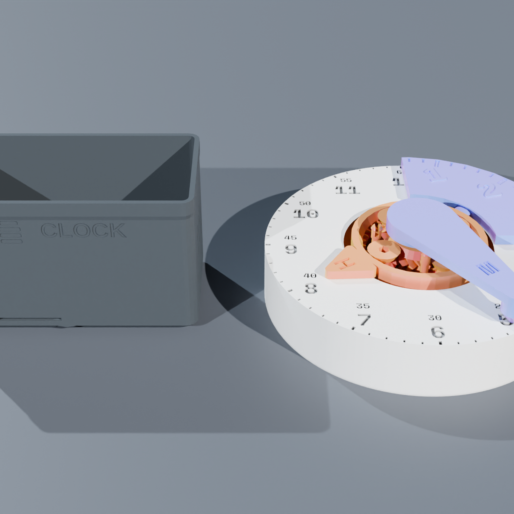
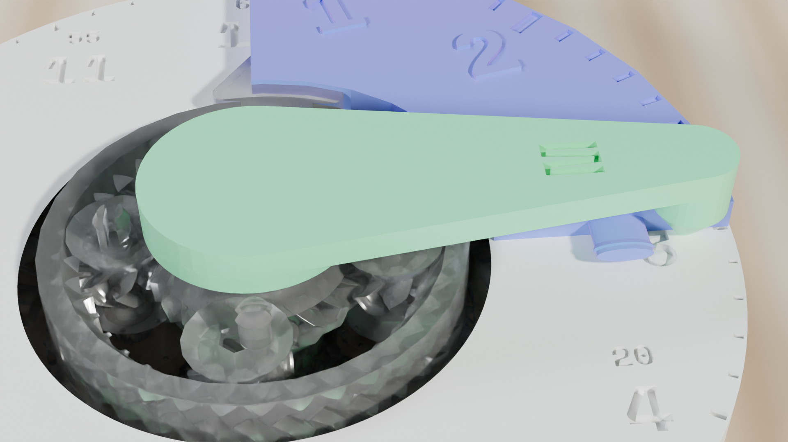
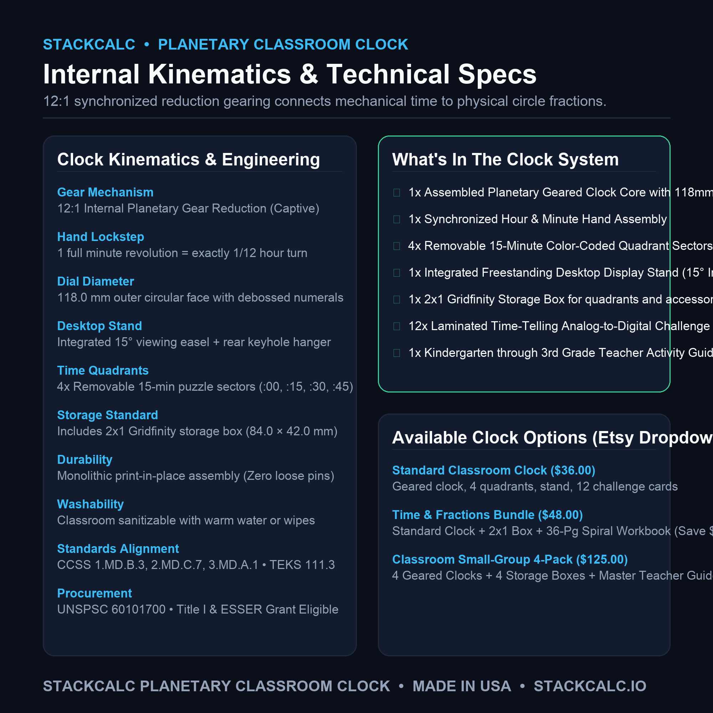
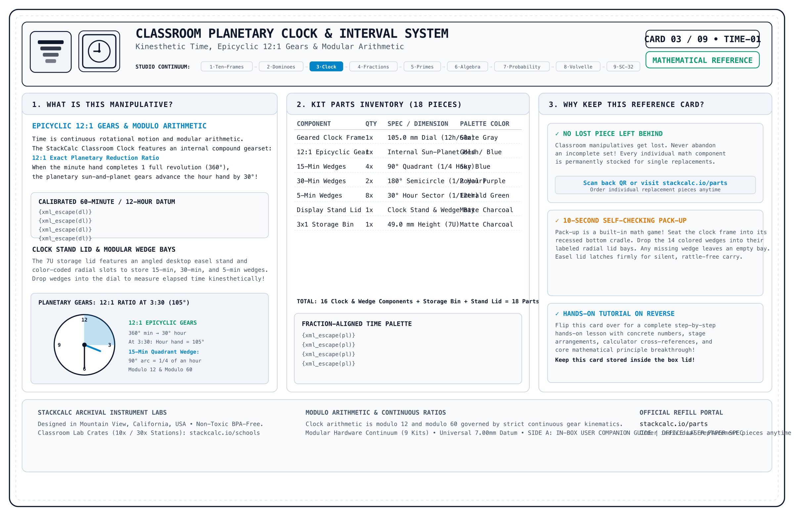
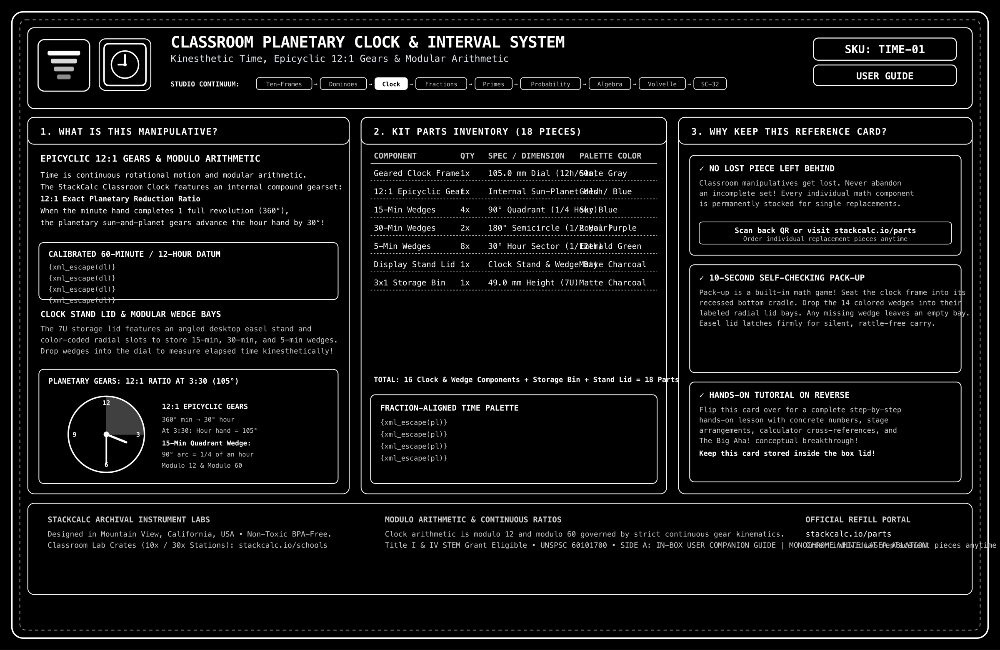

Sectional Classroom Planetary Clock
The tactile mechanical time instrument engineered for intuitive time-telling and elapsed time mastery. Features an internal 12:1 planetary gear core with double-helical herringbone teeth, removable split numeral dial faces, and keyed color-coded hands stored neatly in a modular 2x1 Gridfinity stand.
Eliminating the Common "False Time" Misconception
Most classroom clocks have freely moving, disconnected hands. When students set 3:30, they erroneously point the hour hand directly at 3. The Sectional Clock fixes this permanently.
1. Mathematically Linked Rotation
Turning the minute hand precisely advances the hour hand through our 12:1 internal gear ratio. At half-past three, the hour hand rests exactly halfway between 3 and 4, building accurate spatial intuition.
2. Deconstructible Dial Halves
Remove the left or right numeral face to visually represent "half past" and "quarter to" intervals. Students see the remaining circular arc as an elapsed angle rather than memorizing rote clock rules.
3. Tactile 5-Minute Detents
Subtle mechanical notches provide tactile feedback at every 5-minute interval, reinforcing skip-counting by fives and connecting the dial to multiplication tables.
The Video Showcase: Mechanical Animation, Unboxing & Classroom Lesson
Experience the complete journey from internal planetary epicyclic kinematics and zero-plastic unboxing to tactile time-elapsed instruction on a classroom desk.
Mechanical & CAD Animation
Exploded 3D view of the 12:1 internal epicyclic sun-and-planet gear train, captive arbors, and interlocking dial quadrants.
12:1 Planetary Gearing Synchronization
Rotating minute hand 360° continuously advances hour hand 30° via internal epicyclic gearing, eliminating "half-past" false time reading.
Elapsed Time with Quadrant Wedges
Inserting 15-minute pie wedges from 2:15 to 3:00 to visualize 45 minutes elapsed time as concrete geometric sectors rather than subtraction.

Archival Reference & Video QR Card (135×90mm)
Included inside every box. Scan Side B to jump straight to this 3-video learning portal or inspect Side A for part replacement IDs.
From the Teacher's Manual: Unit Lab Sheet
Most traditional math teacher manuals treat manipulatives as optional afterthoughts. In the StackCalc curriculum, every manipulative unit includes a dedicated, reproducible lab sheet connecting hands-on tactile geometry directly to hardware calculator execution.
Lab 06: Epicyclic Planetary Gearing & Angular Elapsed Time
Investigation Goal: Prove continuous 12:1 mechanical lockstep using the internal planetary gear train. Measure angular minute rotation against hour advance, calculate elapsed time across AM/PM boundaries, and convert degree revolutions to decimal hours on the SC-32 RPN stack.
Snap the four 15-minute quadrant sectors into the clock dial base. Set both hands straight up to 12:00. Rotate the gold minute hand clockwise through multiple full revolutions and observe the continuous internal planetary gearing:
| Clock Face Event | Minute Hand Angle (θm) | Gear Ratio (12:1) | Hour Hand Angle (θh) | Elapsed Decimal Hours |
|---|---|---|---|---|
| 1 Hour Elapsed | 360° | \(360 \div 12\) | 30.0° | 1.0000 hr |
| 2 Hours 15 Min | \(2 \times 360 + 90 = 810^\circ\) | \(810 \div 12\) | 67.5° | 2.2500 hr |
| 3 Hours 40 Min | \(3 \times 360 + 240 = 1320^\circ\) | \(1320 \div 12\) | 110.0° | 3.6667 hr |
Calculate the exact hour hand position and decimal time for 2 hours and 45 minutes on the SC-32 RPN stack:
Build a Complete Hands-On Time & Kinematics Station
Combine 12:1 internal planetary gearing with instant RPN angular arithmetic, fraction-of-an-hour conversion, and classroom investigation lab sheets.

SC-32 Scientific RPN Maker Kit
Perfect for multi-step time-elapsed conversions, angular degree-to-radian transformations, and gear train ratio calculations without confusing parentheses.

36-Page Spiral Student Workbook
Contains 4 specialized time and ratio labs: 15-minute quadrant geometry, AM/PM elapsed time tracking, planetary gear trains, and angular velocity calculations.

Unit Circle Volvelle
Dual-rotor trigonometric calculating wheel. Pairs angular time rotation with exact coordinates, radians, and exact radical values.
Technical Specifications
Precision engineered internal kinematics and classroom proportions.
| Internal Gear Train | 12:1 Double-Helical Herringbone Planetary Gearbox (Zero backlash, self-centering) |
| Dial Diameter | 118.0 mm outer circumference • High-contrast debossed Arabic numerals (1–12) |
| Pointers / Hands | Keyed snap-lock mounting: Teal Hour Hand (thick/short), Coral Minute Hand (long/tapered) |
| Base / Stand | Integrated 2x1 Gridfinity standard bin (84.0 × 42.0 mm base) with 15° viewing angle |
| Material | High-tensile matte PLA / PETG • Smooth self-lubricating gear teeth profile |
| Industrial Design & CMF | Captive 12:1 planetary gear mechanism • 15° desktop easel angle • Standard 2x1 Gridfinity footprint with removable 15-minute quadrant sectors |
| Curriculum Standards | Common Core: CCSS.MATH.CONTENT.1.MD.B.3, 2.MD.C.7, 3.MD.A.1 • TEKS: 111.3.b.7, 111.4.b.9 • Grades 1–3 |
| Procurement Classification | UNSPSC: 60101700 (Math Manipulatives) • NIGP: 785-70 • Title I Math Intervention & ESSER Eligible |
What's in the Box
Complete modular clock assembly ready for hands-on learning.
Safety, Compliance & Guarantees
Sturdy mechanical gear train engineered for classroom safety.
WARNING: CHOKING HAZARD – Small parts. Not for children under 3 years. Contains removable quadrant wedges and indicator hands. Designed for educational time & gear instruction for Grades 1+ (ages 6 and up) under adult supervision.
Gears printed in optical-grade clear PETG polymer; faceplates printed in odorless, non-toxic PLA. Free from BPA, PVC, lead, and phthalates. Wipe clean with damp cloth or sanitizing wipes.
If a quadrant wedge, hand, or face half is lost or broken during active use, order individual matching replacement parts anytime for just $2.49 with free envelope shipping.
Designed and manufactured by StackCalc in California under strict gear mesh tolerances and quality control.
Pedagogical Verification & Classroom Architecture
Compound planetary kinematic accuracy, modular quadrant geometry, and tip-resistant desk footing.
12:1 Planetary Gear Drive
Double-helical herringbone planetary gear core steps the hour hand in precise mathematical lockstep with the minute dial, permanently eliminating arbitrary hand misalignment.
Detachable Quadrants
Removable 15-minute quadrant sectors detach smoothly, allowing students to physically build "quarter after", "half past", and elapsed time intervals prior to reading numerals.
Gridfinity 2×1 Stand
Low center-of-gravity modular base seats firmly into standard 42mm Gridfinity trays or rests stable on student desks without tipping during vigorous manual minute rotation.
Frequently Asked Questions
Gear mechanics, classroom durability, and curriculum standards.
How does the 12:1 internal gear ratio assist learning? +
Standard toy clocks allow hands to move independently, teaching students misleading clock positions (like pointing the hour hand directly at 4 when it's 3:50). The SC-CLK-01's internal planetary gearbox mechanically couples the hands so the hour hand always advances proportionally as the minute hand rotates.
How do the 4 removable quadrant sectors work? +
The clock face incorporates four removable, magnetic/friction-fit 15-minute sectors (:00 to :15, :15 to :30, :30 to :45, and :45 to :00). Students can remove individual sectors to calculate elapsed time, demonstrate 90° right angles, or connect clock angles to fractional circles (1/4, 1/2, 3/4).
Which educational standards does the clock satisfy? +
The Sectional Planetary Clock directly aligns with Common Core State Standards CCSS.MATH.CONTENT.1.MD.B.3 (Tell and write time in hours and half-hours), 2.MD.C.7 (Tell and write time to the nearest 5 minutes), and 3.MD.A.1 (Elapsed time word problems), as well as Texas TEKS 111.3.b.7 and 111.4.b.9.
What if a gear or hand gets damaged or lost? +
Under our "Anti-Heartbreak" lifetime guarantee, schools and parents can request individual matching replacement hands, quadrants, or stands anytime for just $2.49 with free envelope shipping.
3D Print This Geared Clock
Download our print-in-place STL file. Designed to print completely assembled without requiring screws or bearings.
The Sectional Planetary Clock provides students with a foundational understanding of angular ratios and base-60 arithmetic, bridging directly to the time-conversion and trigonometric functions on our SC-32 and SC-6 scientific calculators.